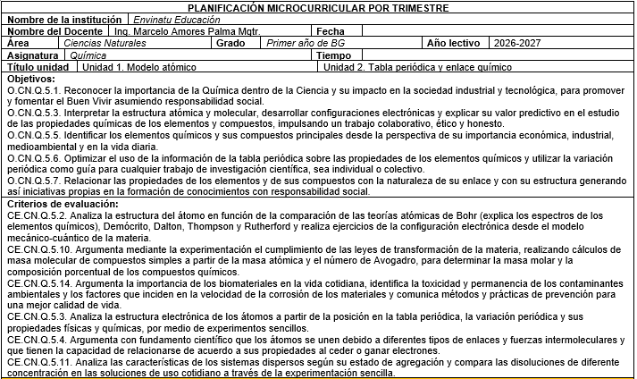
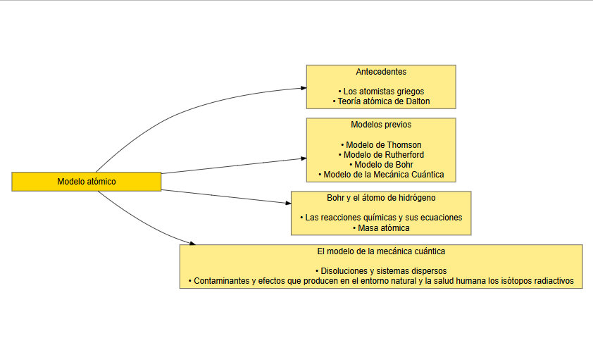
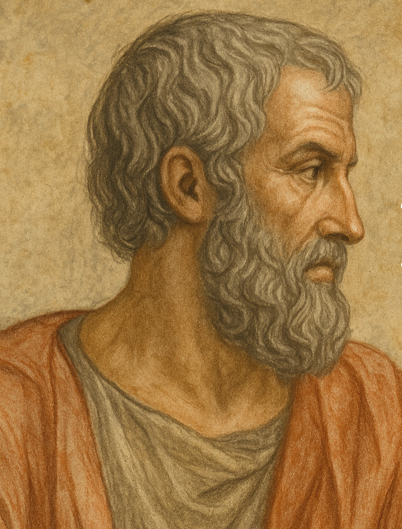
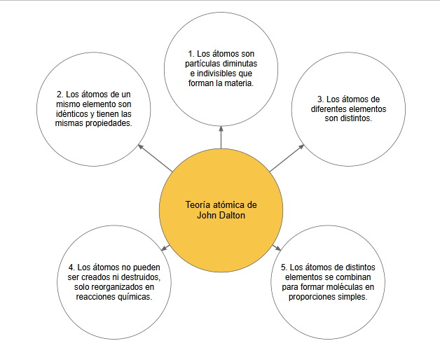
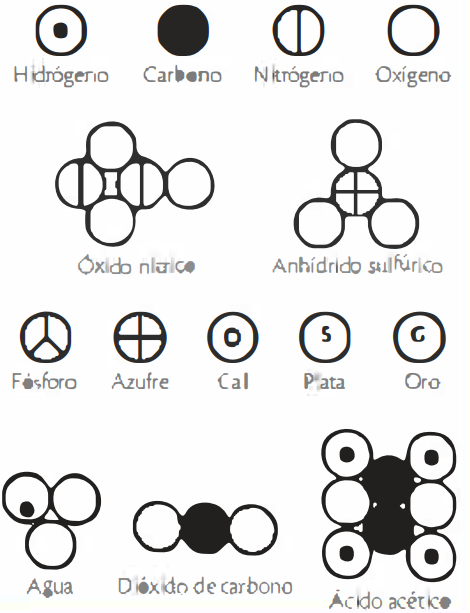
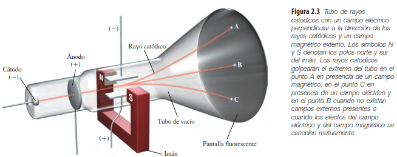
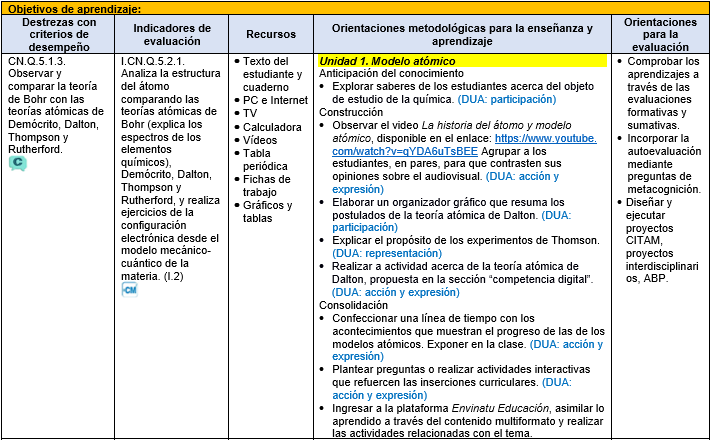

library(DiagrammeR)
grViz("
digraph esquema {
graph [layout = dot, rankdir = LR]
node [shape = box, style = filled, fillcolor = lightgoldenrod1,
color = gray30, fontname = Helvetica, fontsize = 16, width = 4]
# Nodo principal
modelo [label = 'Modelo atómico', shape = box, fillcolor = gold]
# Cuatro bloques (antes en columnas, ahora en filas)
antecedentes [label = 'Antecedentes\n\n• Los atomistas griegos\n• Teoría atómica de Dalton']
previos [label = 'Modelos previos\n\n• Modelo de Thomson\n• Modelo de Rutherford\n• Modelo de Bohr\n• Modelo de la Mecánica Cuántica']
bohr [label = 'Bohr y el átomo de hidrógeno\n\n• Las reacciones químicas y sus ecuaciones\n• Masa atómica']
cuantica [label = 'El modelo de la mecánica cuántica\n\n• Disoluciones y sistemas dispersos\n• Contaminantes y efectos que producen en el entorno natural y la salud humana los isótopos radiactivos']
# Conexiones horizontales
modelo -> antecedentes
modelo -> previos
modelo -> bohr
modelo -> cuantica
}
")Modelo atómico: antecedentes

NotaCompletar esta clase te permitirá:
CN.Q.5.1.3. Observar y comparar la teoría de Bohr con las teorías atómicas de Demócrito, Dalton, Thompson y Rutherford.

Imagina un universo tan pequeño que ningún microscopio óptico podría revelarlo. Allí, partículas diminutas se mueven sin descanso, chocan, se reorganizan y dan forma a todo lo que existe: desde una hoja de papel hasta la atmósfera que respiras. En ese escenario, surge una pregunta que mezcla ciencia y metáfora: ¿un átomo se parece, en algún sentido, a un sistema solar?
La comparación seduce por su elegancia, aunque la física moderna explica una historia mucho más extraña y fascinante. Antes de la mecánica cuántica, pensadores como Demócrito, Dalton, Thomson y Rutherford intentaron descifrar este mundo invisible con ideas que hoy parecen experimentos mentales, pero que fueron esenciales para abrir la puerta hacia el modelo de Bohr y su explicación de los espectros de los elementos.
Para provocar un poco de desequilibrio intelectual: si pudieras viajar en el tiempo y hablar con Leucipo, ¿cómo le explicarías que existe un vacío que nadie puede ver y que, aun así, permite el movimiento eterno de los átomos? Esta clase explorará justamente esa búsqueda humana por comprender lo que la vista no alcanza.
“Hubo un día, hace mucho, en que toda la Tierra, todo el sistema solar, toda la Vía Láctea y todas las galaxias conocidas cabían en una pepita de calabaza. No es un mito, sino la concepción científica de la creación: en el principio fue el Big Bang” (Glashow, 2000).
Luego de los cien primeros segundos del Big Bang, la temperatura del universo descendió y fue posible la primera síntesis de un átomo. Con la aparición del hidrógeno e inmediatamente después el helio, se inició la síntesis de átomos más complejos. Estas diminutas estructuras son los componentes básicos de todas las sustancias y su estructura es lo que vamos a conocer en esta unidad.

Para la Química, el estudio de la materia es el fundamento de toda investigación, y conocer la estructura del átomo es el paso necesario para la comprensión del comportamiento de todas las sustancias que conocemos y que estamos por descubrir. Al igual que otras ciencias experimentales, la Química ha ido cambiando sus teorías acerca de la estructura del átomo. Con el avance de la tecnología se han logrado descubrimientos que han permitido al ser humano acercarse a un modelo atómico que dé respuesta a algunas interrogantes.
A través de la historia, las teorías atómicas han tratado de dar una explicación acerca de la estructura del átomo, unidad básica que compone la materia.
Los atomistas griegos
Hace 2500 años, Leucipo irrumpió en la sociedad griega con una propuesta filosófica acerca de la conformación de la realidad: para él todas las cosas en el universo se podían explicar a través de los átomos y su movimiento.
La palabra átomo deriva de dos palabras griegas: a, “sin”; tomo, “parte”. Para Leucipo solo existían átomos y vacío. Todas las sustancias conocidas, incluida el alma humana, estaban conformadas por átomos que se movían en el vacío, y que eran indivisibles, inalterables y eternos. La combinación entre ellos, sus choques, geometría y su posición podían crear la diversidad de sustancias y cuerpos.
Las ideas de Leucipo fueron seguidas, completadas y desarrolladas por su discípulo, el filósofo Demócrito; por esta razón a ambos se les conoce como los filósofos atomistas

Teoría atómica de John Dalton
Las ideas atomistas de Leucipo y Demócrito, al no tener un sustento “razonable” que demostrara objetividad y relación con lo que los sentidos pueden percibir acerca de la materia, fueron dejadas de lado hasta el siglo XVIII.
Más de 2000 años después, John Dalton retomaría las ideas de los griegos, para dejar sentadas las bases que ayudarían a dar forma a la teoría atómica actual.
El científico inglés John Dalton (1766-1844) precisó y complementó la teoría de los griegos con sus numerosos experimentos de laboratorio, y así logró explicar las relaciones de masa que guardan entre sí todas las sustancias. La teoría atómica de John Dalton establece que:

A pesar del carácter experimental que Dalton añadió en el estudio de la materia, las limitaciones tecnológicas de la época no le permitieron demostrar todos sus postulados. Sin embargo, y a pesar de las restricciones, los postulados de Dalton se tomaron como base para formular la teoría atómica moderna.
library(DiagrammeR)
grViz("
digraph dalton {
graph [layout = neato, overlap = false, outputorder = edgesfirst]
node [shape = circle,
style = filled,
fontsize = 18,
fontname = Helvetica,
fixedsize = true,
width = 3.5,
color = gray30]
# Nodo central
centro [label = 'Teoría atómica de\nJohn Dalton',
fillcolor = '#F7C548',
fontsize = 20,
width = 3.8]
# Nodos externos
n1 [label = '1. Los átomos son\npartículas diminutas\ne indivisibles que\nforman la materia.',
fillcolor = '#FFFFFF']
n2 [label = '2. Los átomos de un\nmismo elemento son\nidénticos y tienen las\nmismas propiedades.',
fillcolor = '#FFFFFF']
n3 [label = '3. Los átomos de\ndiferentes elementos\nson distintos.',
fillcolor = '#FFFFFF']
n4 [label = '4. Los átomos no pueden\nser creados ni destruidos,\nsolo reorganizados en\nreacciones químicas.',
fillcolor = '#FFFFFF']
n5 [label = '5. Los átomos de distintos\nelementos se combinan\npara formar moléculas en\nproporciones simples.',
fillcolor = '#FFFFFF']
# Posiciones radiales
n1 [pos = '0,3!']
n2 [pos = '-3,1!']
n3 [pos = '3,1!']
n4 [pos = '-3,-2!']
n5 [pos = '3,-2!']
centro [pos = '0,0!']
# Conexiones
edge [color = gray40, penwidth = 2]
centro -> n1
centro -> n2
centro -> n3
centro -> n4
centro -> n5
}
")
La naturaleza eléctrica de la materia y el modelo atómico de J. J. Thomson
Los rayos catódicos

Si eran partículas, no debían dispersarse en el espacio.
Si eran ondas, no debían modificar su trayectoria rectilínea.
Es en medio de esa discusión que Joseph John Thomson (18561940), un físico británico, realiza sus experimentos con los rayos catódicos y expone como resultado de estos su modelo atómico.
El budín de pasas
El propósito de los experimentos de Thomson era explicar la naturaleza de los rayos catódicos y sus resultados mostraron que esta radiación es producida por partículas pequeñas a las que él llamó “corpúsculos con carga negativa”. Así, Joseph John Thomson descubrió lo que más tarde se denominaría electrón
{kind=link}
